- 30 Jul, 2020
- 9 min read
INTRODUCTION
Problem
A market forecast is a central component of a market analysis, projecting future numbers, characteristics and trends in the target market. In the same line, it is important to emphasize that the future is not completely available and should only be estimated from what has already happened, for this reason, models should be taken that adjust to historical data and use them to predict future observations.
For this reason, forecasting is considered a key ingredient of decision making in both the public and private sectors. It is particularly important in the context of banking, both in terms of management and supervision.
The objective of this study is to forecast through time series the number of searches for the year 2021 of the main financial products based on weekly historical data of 5 years, that is, the dates from 19/07/2010 to 12/07/2020.
The financial products are:
Mortgage credit
Investment credit
Savings account
Checking account
Investments
Credit card
Debit card
However, the main hypotheses that have been considered prior to the development of this study are the following:
Due to the global situation, it is considered that in Colombia the number of credit card searches will increase.
Faced with a panicky market, people are afraid to invest, therefore, this category will not present a greater number of searches.
A rise in mortgage credit is expected by the beginning of 2021.
Similarly, for the year in question, an increase in searches related to savings accounts is projected.
Interests
Banking institutions that wish to know the forecast of the trends in internet searches for their main financial products for the year 2021. This is important when carrying out digital marketing campaigns to increase the number of clients and thus obtain greater economic benefit.
DATA
This study has 7 completely different data sets, belonging to each product category defined above. The data have been downloaded in Google trends with the filter of searches in Colombia from 2015 to 2020.
Exploratory analysis
Each data set has 261 rows and none of them had null values. A brief statistical analysis of each of the categories will follow.
Mortgage credit
The mean value of the searches for this set was 56 with a standard deviation of 14, the first quartile Q1 was at 47 and the third Q3 at 66 (SEE APPENDIX 1). Its distribution is mesokurtic because the value of Kurtosis was 0.16, that is, the distribution has a normal concentration in its central region. In graph 1, the density can be seen by checking the above.
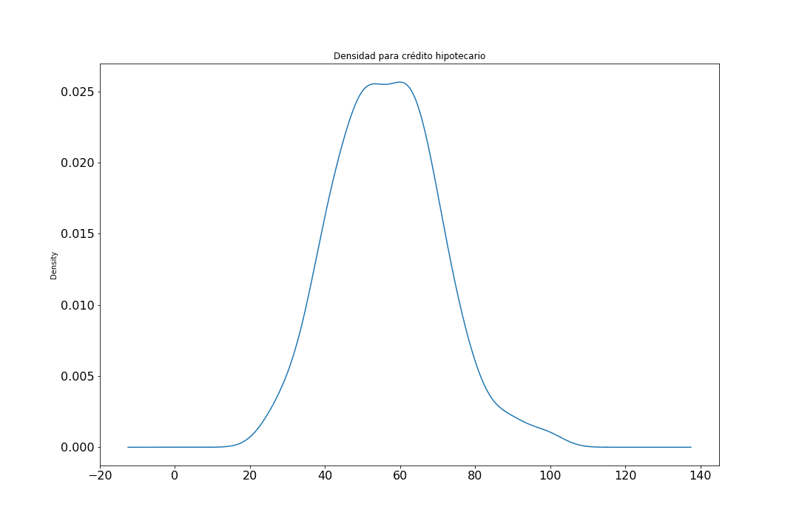
Graph 1
In the first instance it looks like a Gaussian distribution, however, it is a normal distribution since the obliquity value was 0.31 presenting presence of outliers at the maxima as can be seen in the box and whiskers diagram.
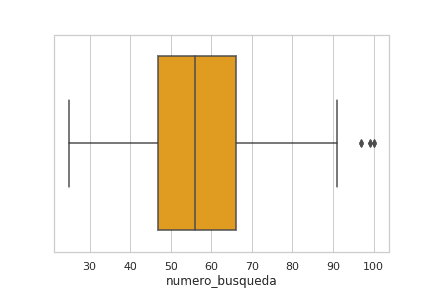
Graph2
NOTE: This study involves outliers in all data sets.
Investment credit
The mean value of the searches for this set was 42 with a standard deviation of 12, the first quartile Q1 was at 33 and the third Q3 at 50 (SEE APPENDIX 2). Its distribution is leptokurtic because the value of Kurtosis was 1.02, that is, it has a high concentration in its central region. In graph 3, the density can be seen by checking the above.
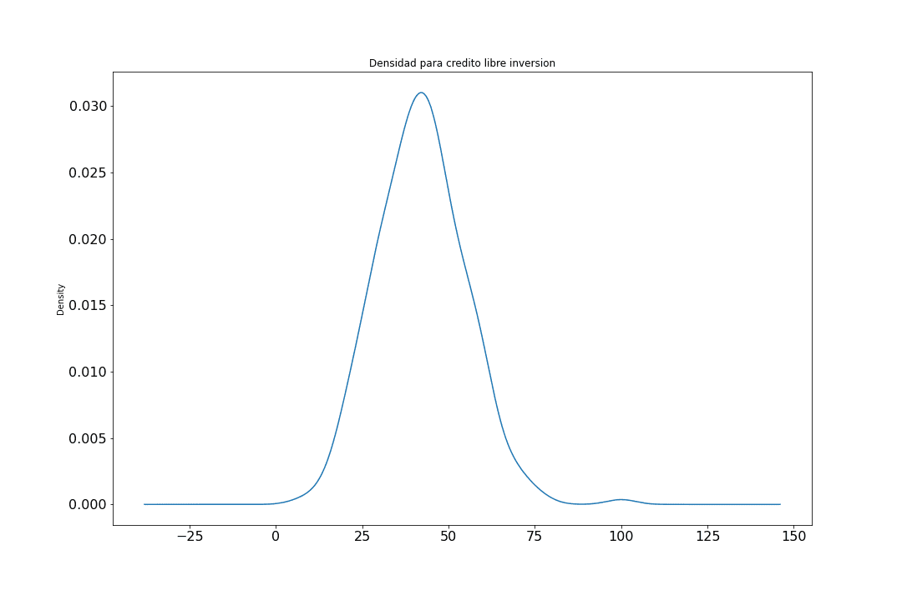
Graph 3
Very similar to the previous case, presenting a similarity to the Gaussian distribution, however, it is a Gaussian distribution since the obliquity value was 0.39 with the presence of outliers at the maxima as can be seen in the box and whiskers diagram.
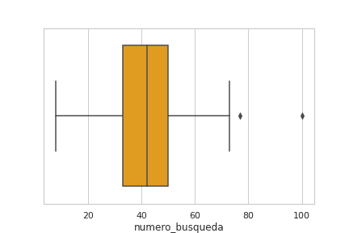
Graph 4
Savings account
The mean value of the searches for this set was 23 with a standard deviation of 12, the first quartile Q1 was at 15 and the third Q3 at 28 (SEE APPENDIX 3). Its distribution is leptokurtic because the value of Kurtosis was 8.06, i.e. it has a high concentration in its central region. In graph 5, the density can be seen by checking the above.
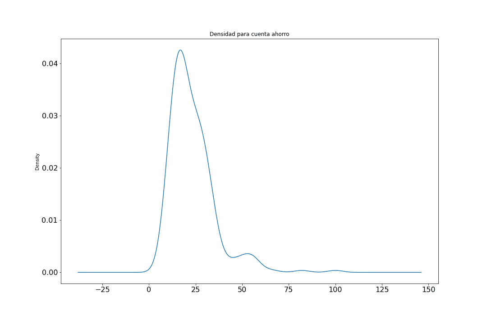
Graph 5
It can be seen that for the savings account data set to present a positively biased distribution since the obliquity value was 2.20 with the presence of outliers at the maxima as can be seen in the cash flow and whiskers diagram.
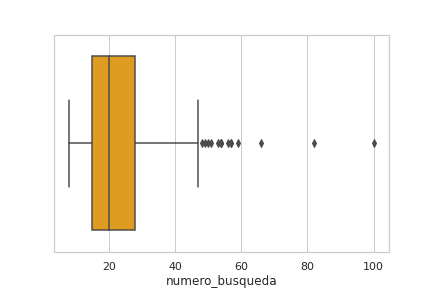
Graph 6
Checking account
The mean value of the searches for this set was 41 with a standard deviation of 16, the first quartile Q1 was at 30 and the third Q3 at 53 (SEE APPENDIX 4). Its distribution is mesocuric because the value of Kurtosis was 0.008, that is, it has a normal concentration in its central region. In graph 7 the density can be seen by checking the above.
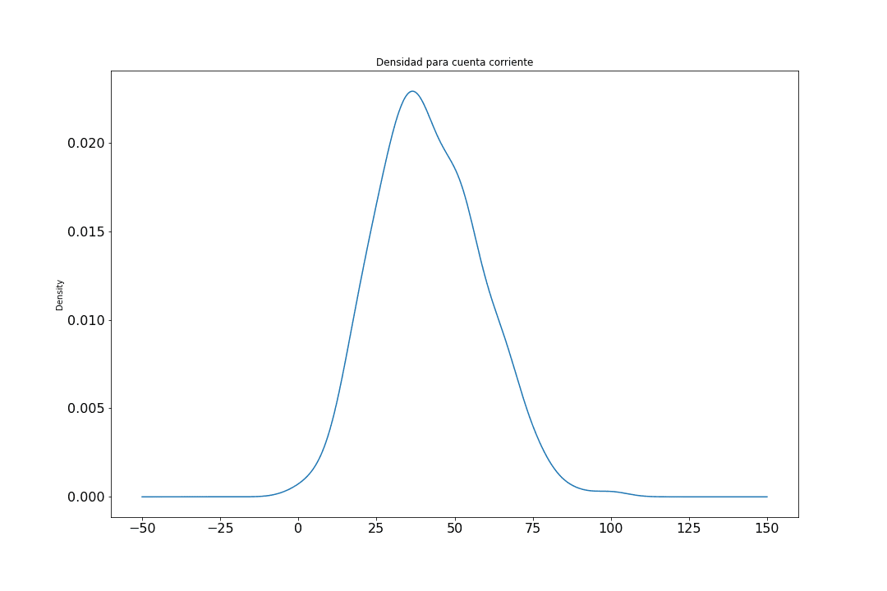
Graph 7
It can be seen that for the savings account data set to have a Gaussian distribution since the obliquity value was 0.33 with the presence of outliers at the maxima as can be seen in the box and whiskers diagram.
Graph 8
Investments
The mean value of the searches for this set was 62 with a standard deviation of 10, the first quartile Q1 was at 29 and the third Q3 at 70 (SEE APPENDIX 5). Its distribution is leptocuric because the value of Kurtosis was 0.70, that is, it has a high concentration in its central region. In graph 9, the density can be seen by checking the above.
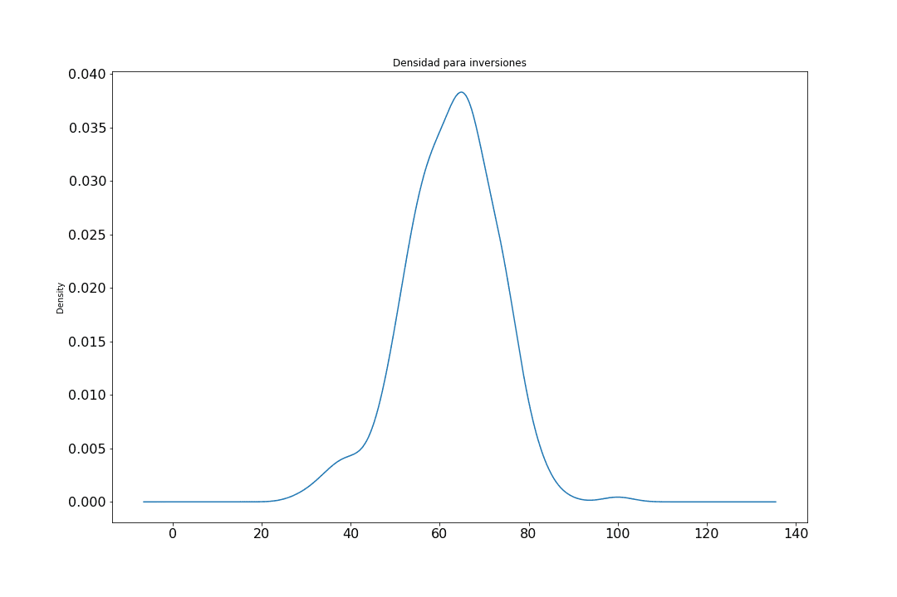
Graph 9
It can be seen that for the investment data set to present a negatively biased distribution since the obliquity value was -0.30 with the presence of outliers on both sides (minima and maxima) as can be seen in the box and whiskers diagram.
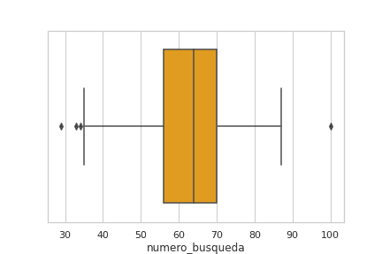
Graph 10
Credit card
The mean value of the searches for this set was 49 with a standard deviation of 11, the first quartile Q1 was at 41 and the third Q3 at 59 (SEE APPENDIX 6). Its distribution is mesocuric because the value of Kurtosis was 0.34, that is, it has a normal concentration in its central region. In graph 11, the density can be seen by checking the above.
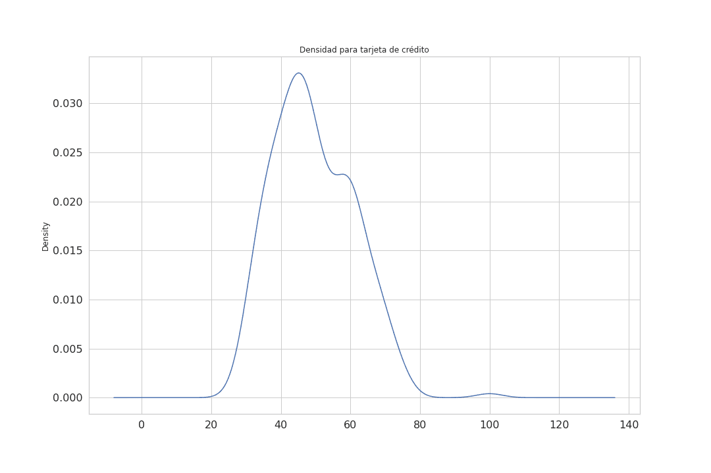
Graph 11
It can be seen that for the investment data set to present a positively biased distribution since the obliquity value was 0.53 with the presence of outliers at the maxima as can be seen in the box and whiskers diagram.
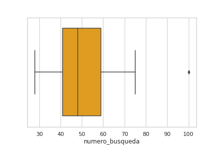
Graph 12
Debit card
The mean value of the searches for this set was 45 with a standard deviation of 12, the first quartile Q1 was at 37 and the third Q3 at 53 (SEE APPENDIX 7). Its distribution is leptocuric because the value of Kurtosis was 1.01, that is, it has a high concentration in its central region. In graph 13, the density can be seen by checking the above.
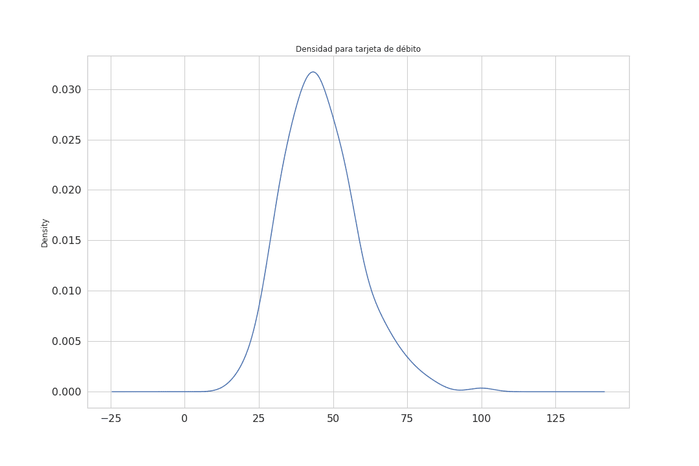
Graph 13
It can be seen that for the investment data set to present a positively biased distribution since the obliquity value was 0.68 with the presence of outliers at the maxima as can be seen in the box and whiskers diagram.
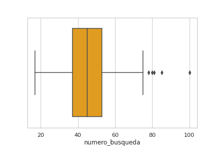
Graph 14
In conclusion, the data set that presented the highest number in the average was investments with 62 followed by mortgage credit with 56, whose standard deviations are 10 and 14 respectively. On the other hand, the one that obtained the lowest number in the average was savings account with 23, but at the same time it presented the highest number of Kurtosis value and obliquity with 8.06 and 2.2 respectively, that is, it had the most leptokurtic and positively biased distribution than the other data sets. Finally, checking account was the one that came closest to a Gaussian distribution.
METHODS
The main method used in this study is the Facebook Prophet which is an additive regression model [1] with four main components:
A linear or logistic growth curve trend by parts. Prophet automatically detects changes in trends by selecting points of change from the data.
An annual seasonal component modelled with the Fourier series.
A weekly seasonal component using dummy variables.
A user-supplied list of major holidays
In addition, it is important to mention that Prophet relies on the Monte Carlo methods of the Markov Chain (MCMC) [2] to generate its forecasts.
RESULTS
Mortgage credit
For this particular financial product in the years 2016 - 2017 - 2018 - 2019; there is (graph 15) a drop at the end of each year. But in general with an upward trend. A rise is expected at the beginning of 2021, supported by the obvious period of recession [3] that the country and the world are going through, already since 2018 and triggered by the COVID-19, which will force the government to encourage the reactivation of the economy [4]. In general, governments do this by putting three variables into phase: 1) Low credit rate, 2) Demand and 3) Job offer [5].
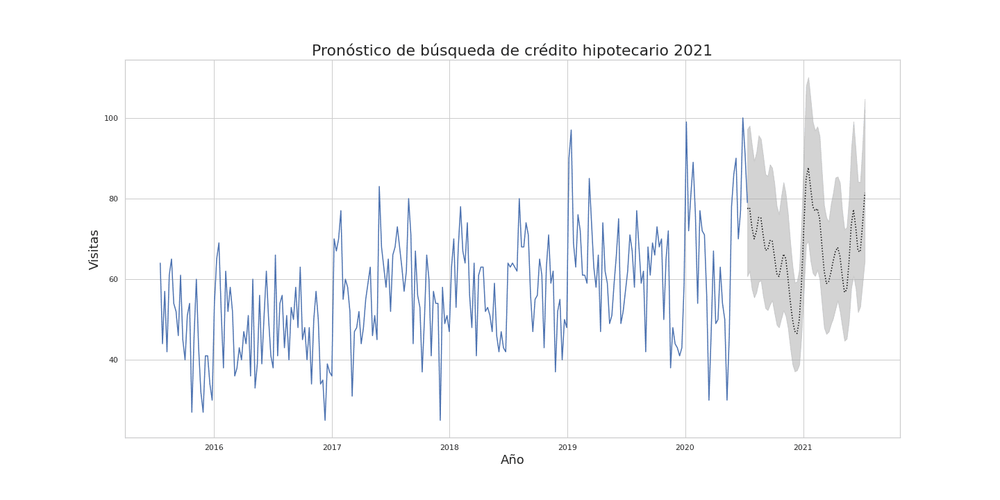
Graph 15
Investments
A rise is expected at the beginning of 2021 (graph 16) given the need to recover the indicators that denote a good economy, which will favour the increase of this financial product given the initial push to which the government is obliged. Aspects such as the Davos Forum [6], the growth of non-energy foreign investment [7], and the maintenance of Colombia's investment grade rating [8], help create an ideal environment of confidence for potential investors.
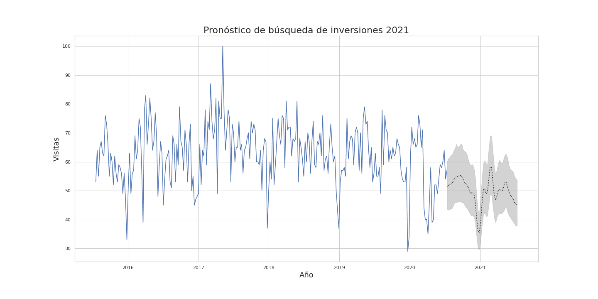
Graph 16
Savings account
Savings account charts have increased in their searches precisely because people want to save even the smallest amount of weight [9]. And as the saying goes, when the river is big, you can't see the stones. In times of abundance people do not worry about the different fees that banks charge them in their savings accounts. But in times of crisis any savings are important. People are not going to stop using this product but they are going to want to know more and more what it means to have it, so a rise is foreseen at the beginning of 2021 (graph 17), a period for which most people plan financially and want to have the costs incurred by their products.
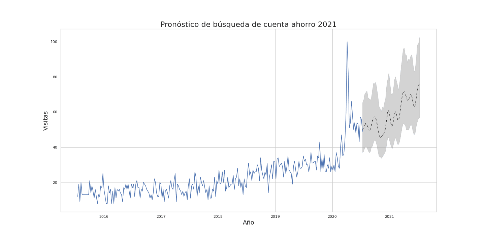
Graph 17
Investment credit
This type of product will be marked by the dynamics of the growing economic reactivation encouraged by the government, which will lead to a decrease in interest rates[10], in addition to the various reliefs that banks have granted to their clients[11], as well as the emergence of innovative digital platforms at the forefront of the market that facilitate obtaining free investment credit[12]. In the end, a change in trend is observed for the behavior of this product as of 2019 (graph 18), but this can be attributed to the aforementioned recession[3]. Like all investment products, it will show a rather prudent behaviour with a slight increase at the beginning of 2021. This prevention is more than expected given the period of uncertainty about what will happen to the economy.
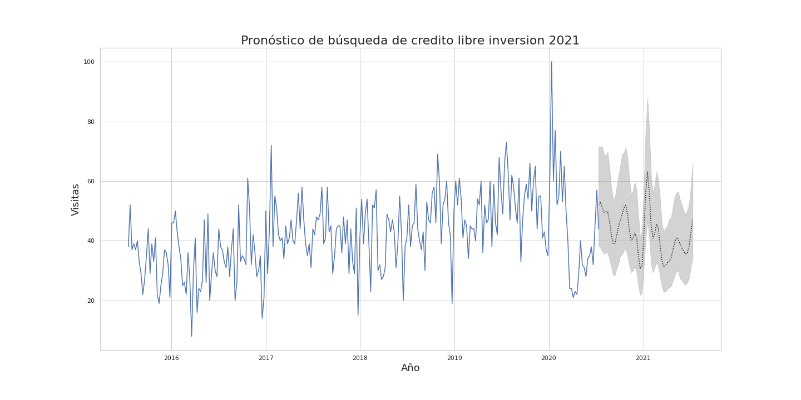
Graph 18
Credit card
This is a very attractive product for Colombian citizens (graph 19) because of its apparent liquidity and immediate access to cash or to the acquisition of goods [13]. Aspects such as the COVID-19 accelerated the inevitable implementation of digital gateways for the purchase of goods and/or services [14]. This, in addition to the fact that banks have lowered their risk profiles in order to grant this product [15].
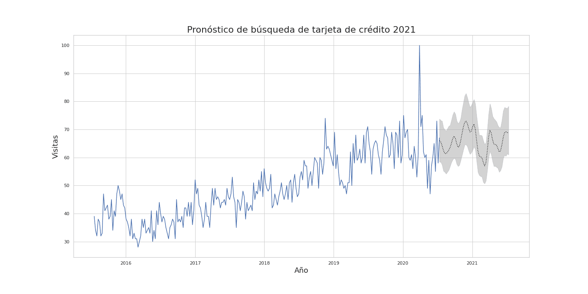
Graph 19
Checking account
This product has an interesting behavior, especially if we can summarize it, it is a strong indicator of the existence of companies and financial movements between legal entities mainly. Well, the graph shows a lateralization and in the long run a stable behavior (graph 20) of the same for a couple of years now and it is striking that the graph has been maintained in spite of the economic situation, it seems as if the graph has not been affected, but the truth is that companies refuse to disappear, the owners of companies refuse to close companies, we can see this in the reinvention and adaptation of many companies such as Uber [16], which despite the hard legal setbacks has struggled to move forward despite the health situation, Arturo Calle [17] or Forros Sorpresa [18], a thriving company in Barranquillera, which has had to replace the manufacture of linings for corpses.
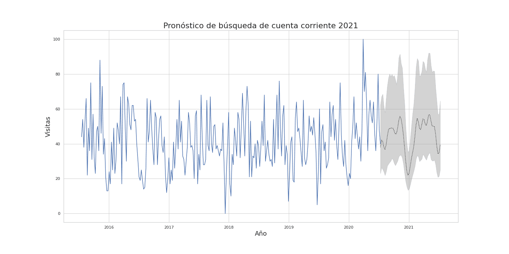
Graph 20
Debit card
This product is closely related to savings accounts and, like them, we are seeing an increase (graph 21) in their use as they constitute an important means of payment through digital platforms [19], in contrast to physical means which have practically been abolished by the measures adopted in the face of the current pandemic. Since this is a means of liquidity for the common citizen, prudent behavior will be shown by 2021 in relation to the use of this type of product.
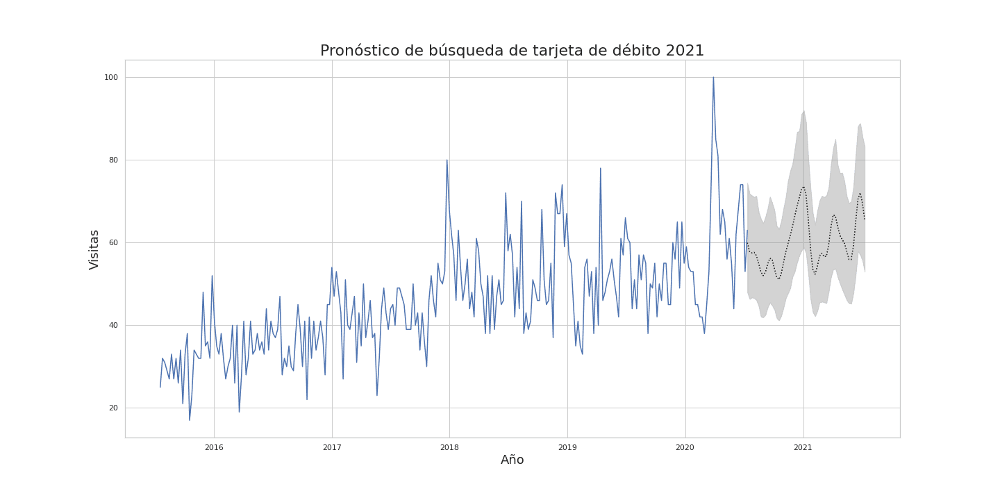
Graph 21
Model metrics
The metrics used to measure the model in each data set were R^2, MAE(Mean Squared Error), MSE(Mean Absolute Error). A comparison with the results in each data set is made below:

Graph 22
It can be seen that in graph 22 the highest value of R^2 was credit card, followed by savings account and debit card. And in turn these data sets obtained the lowest MSE with respect to the other financial products analyzed in this study. This means that the model fit better in these three data sets, obtaining a better performance in the search forecast for the year 2021.
CONCLUSIONS
It can be said that financial products such as mortgages and investments showed an increase at the beginning of 2021 due to the need to recover the indicators that show a growth of the economy. The apparent growth of savings accounts is due in part to the need of their users to know what they are being charged with the use of this product. And finally, current accounts show the great tenacity of Colombian companies to face the crisis, which refuse to give up.
RECOMMENDATIONS
For further studies, it is recommended to use time series whose periodicity is daily, taking into account other factors such as public holidays. On the other hand, remove outliers from the data sets in order to observe the forecasting behaviour of searches without these types of data.
NOTES
The graphics along with the source code for this study have been published in the Github repository.
REFERENCES
[1] S. Taylor and B. Letham, "Prophet: forecasting at scale - Facebook Research", Facebook Research, 2017. [Online]. Available: https://research.fb.com/blog/2017/02/prophet-forecasting-at-scale/. [Accessed: 29- Jul- 2020].
[2] "Markov Models - an overview | ScienceDirect Topics", Sciencedirect.com, 2019. [Online]. Available: https://www.sciencedirect.com/topics/neuroscience/markov-models. [Accessed: 29- Jul- 2020].
[3] Campos, F., 2018. Las Campanas Del Dólar Ya Están Sonando.... [online] Portafolio.co. Available at: https://www.portafolio.co/economia/finanzas/las-campanas-del-dolar-ya-estan-sonando-5242 6 [Accessed 9 December 2018].
[4] Analitik, V., 2019. Camacol Insiste En Créditos Hipotecarios Del 90 % Para Impulsar El Sector - Valora Analitik. [online] Valora Analitik. Available at: https://www.valoraanalitik.com/2019/08/29/camacol-insiste-en-creditos-hipotecarios-del-90-para-impulsar-el-sector/ [Accessed 29 August 2019].
[5] Becerra, L., 2019. Los Créditos Hipotecarios Movieron $6,8 Billones En El Primer Semestre. [online] Larepublica.co. Available at: https://www.larepublica.co/finanzas/los-creditos-hipotecarios-movieron-68-billones-en-el-primer-semestre-2919485 [Accessed 10 October 2019].
[6] Ávila, R., 2020. ‘Visita A Davos Traerá Inversión Por Más De US$200 Millones’. [online] Portafolio.co. Available at: https://www.portafolio.co/economia/visita-a-davos-traera-inversion-por-mas-de-us-200-millones-537436 [Accessed 24 January 2020].
[7] Dinero, R., 2020. Inversión Extranjera No Energética Subió 141%: ¿Cómo Se Logró?. [online] Cómo va la inversión extranjera en medio del coronavirus. Available at: https://www.dinero.com/pais/articulo/como-va-la-inversion-extranjera-en-medio-del-coronavirus/286413 [Accessed 17 May 2020].
[8] Amaya, J., 2020. Moody’S Ratifica El Grado De Inversión De Colombia Tras Mantener Su Calificación. [online] Larepublica.co. Available at: https://www.larepublica.co/finanzas/moodys-ratifica-el-grado-de-inversion-de-colombia-tras-mantener-su-calificacion-3025097 [Accessed 1 July 2020].
[9] Tiempo, C., 2020. Ojo, Los Gastos Hormiga Pueden Romper Su Bolsillo Más De Lo Que Cree. [online] El Tiempo. Available at: https://www.eltiempo.com/economia/sectores/como-controlar-los-gastos-hormiga-para-que-no-afecten-sus-finanzas-personales-458270 [Accessed 3 February 2020].
[10] Negocios, E., 2020. Banco De La República Baja De Nuevo Su Tasa Y La Deja En 3,25 %. [online] El Tiempo. Available at: https://www.eltiempo.com/economia/sector-financiero/coronavirus-banco-de-la-republica-baja-en-medio-punto-mas-su-tasa-de-interes-y-la-deja-en-3-25-490500 [Accessed 30 April 2020].
[11] Monterrosa, H., 2020. Créditos De Libre Inversión, Los Saldos Con Más Periodos De Gracia Hasta El 15 De Abril. [online] Larepublica.co. Available at: https://www.larepublica.co/finanzas/los-creditos-de-libre-inversion-los-saldos-con-mas-periodos-de-gracia-2994207 [Accessed 18 April 2020].
[12] Vita, L., 2020. Excelcredit, La Fintech Colombiana Que Ofrece Créditos De Libre Inversión 100% Digitales. [online] Larepublica.co. Available at: https://www.larepublica.co/especiales/las-oportunidades-del-sector-fintech/excelcredit-la-fintech-colombiana-que-ofrece-creditos-de-libre-inversion-100-digitales-3001624 [Accessed 7 May 2020].
[13] Vargas, D., 2019. En Colombia, Gastos Con Tarjeta Son Mayores Pero Menos Frecuentes. [online] El Tiempo. Available at: https://www.eltiempo.com/economia/sectores/colombia-el-pais-donde-mas-se-gasta-con-tarjetas-debito-y-credito-en-latinoamerica-323340 [Accessed 6 February 2019].
[14] Dinero, R., 2020. Amazon Habilita El Pago En Efectivo En Colombia. [online] Amazon activa nueva opción de pago en Colombia. Available at: https://www.dinero.com/tecnologia/articulo/amazon-activa-nueva-opcion-de-pago-en-colombia/267156 [Accessed 14 February 2019].
[15] Venegas, A., 2019. La Aprobación De Tarjetas De Crédito A Perfiles De Alto Riesgo Creció 24%. [online] Larepublica.co. Available at: https://www.larepublica.co/finanzas/la-aprobacion-de-tarjetas-de-credito-a-perfiles-de-alto-riesgo-crecio-24-2830008 [Accessed 20 February 2019].
[16] Mundo, B., 2020. Uber En Colombia: Cómo Se "Reinventó" La Empresa Para Volver Al País Pese A La Prohibición. [online] La Prensa. Available at: https://www.laprensa.com.ni/2020/02/21/internacionales/2643114-uber-en-colombia-como-se-reinvento-la-empresa-para-volver-al-pais-pese-a-la-prohibicion [Accessed 21 February 2020].
[17] Publimetro, C., 2020. Arturo Calle Se Reinventó Para Conseguir Dinero En Tiempos De Cuarentena. [online] Publimetro Colombia. Available at: https://www.publimetro.co/co/noticias/2020/05/04/arturo-calle-se-reinvento.html [Accessed 4 May 2020].
[18] BLU Radio, D., 2020. Por La Pandemia, Empresa De Forros Industriales Ahora Hace Bolsas Para Cadáveres. [online] Blu Radio. Available at: https://www.bluradio.com/sociedad/por-la-pandemia-empresa-de-forros-industriales-ahora-hace-bolsas-para-cadaveres-257572-ie435 [Accessed 5 July 2020].
[19] Meañoz, F., 2020. Por La Cuarentena, Creció El Uso De Los Medios De Pago Digitales Y Se Incorporaron 2,6 Millones De Nuevos Usuarios En Un Mes. [online] infobae. Available at: https://www.infobae.com/economia/2020/06/03/por-la-cuarentena-crecio-el-uso-de-los-medios-de-pago-digitales-y-se-incorporaron-26-millones-de-nuevos-usuarios-en-un-mes/ [Accessed 3 June 2020].
APPENDIX
Appendix 1
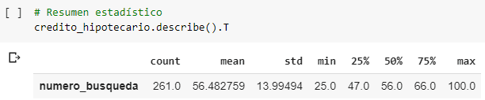
Appendix 2
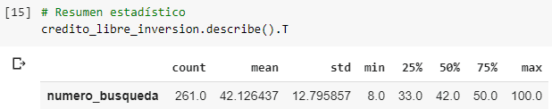
Appendix 3
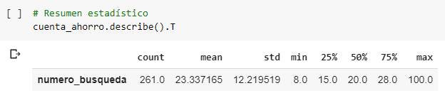
Appendix 4
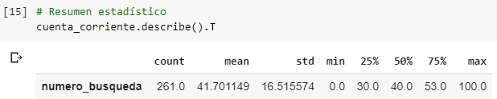
Appendix 5
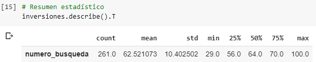
Appendix 6
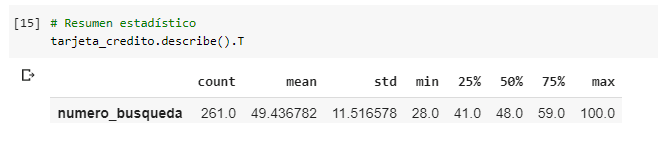
Appendix 7
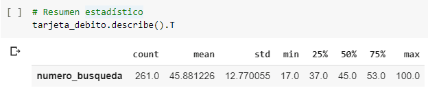